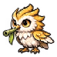
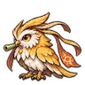
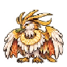

No.068
ピユム
風 通常
葦の葉をくちばしで丸め笛を作る。短い笛の音で今日の風向きを伝える。
基本データ
| 図鑑番号 | No.068 |
|---|---|
| タイプ | 風タイプ |
| 進化 | Lv.16でカザハルに進化 |
| 入手方法 | 葦風の小径（Lv.10〜13）の草むらに出現。 |
Lv.50の能力値
| 体力 | 278 | |
|---|---|---|
| 物理攻撃 | 165 | |
| 物理防御 | 116 | |
| 特殊攻撃 | 164 | |
| 特殊防御 | 120 | |
| 素早さ | 113 | |
| 命中 | 102 | |
| 回避 | 96 |
冒険中の能力値はレベルに応じて上がります。オンライン対戦の通常レンタルはLv.50で統一されます。
覚える技
| 技 | タイプ | 分類 | 威力 | 命中 | PP | 効果 |
|---|---|---|---|---|---|---|
| 風のこだま | 風 | 物理 | 24 | 100 | 30 | 風の力をまとった軽い物理攻撃。確実に当たる。10%で目眩にすることがある。 |
| 風渡りの詩 | 風 | 特殊 | 26 | 98 | 30 | 風の力で生命力を吸う特殊攻撃。与えたダメージの1/4だけ体力を回復する。10%で目眩にすることがある。 |
| 澄んだ響き | 無 | 特殊 | 32 | 96 | 20 | 澄んだ音を響かせる特殊攻撃。どのタイプにも等しく当たる。 |
| 羽ばたく息吹 | 風 | 回復 | — | — | 10 | 風の力で最大体力の30%を回復する。 PPを1消費する。 |
進化の系譜
- ピユムLv.16 ▶

カザハルLv.32 ▶
ソラマド
タイプ相性
風タイプの技は晶タイプに強く（1.5倍）、晶タイプの技を受けると効果が大きくなります。同じタイプの技を使うと威力が1.15倍になります。